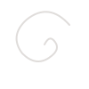

Melisbrillux
Ricette della tradizione, scritte con amore

Ultima ricetta

Salame di Cioccolato
di Melisbrillux
Il classico dolce della tradizione italiana, senza cottura: biscotti, cioccolato fondente e rum si uniscono in un rotolo goloso che ricorda un salame.
Leggi la ricetta